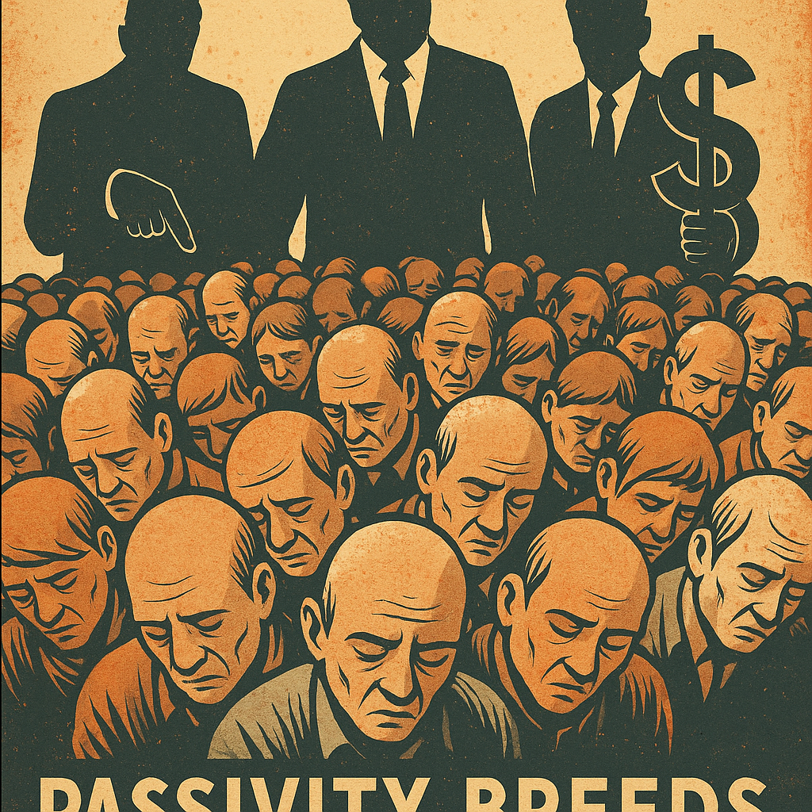

Publicado em 2025-04-26 22:24:51
Abomino todo e qualquer sistema político que, em absoluta passividade, aceite deglutir — gota a gota — a ignorância, a arrogância, a demagogia, o culto da personalidade, os caciques, e tudo quanto a política consegue materializar de mais vil.
Uma sociedade que, ao longo dos séculos, se habitua a conviver com o mal, não é apenas vítima.
É cúmplice.
É fonte ativa de destruição, de decadência, de perpetuação dos próprios grilhões que a amarram.
A indiferença não é neutra.
A resignação não é inocente.
Onde a liberdade é abandonada à apatia, floresce a tirania.
Só uma cidadania vigilante, corajosa e consciente pode resgatar um povo da lenta agonia a que os sistemas apodrecidos o condenam.
Just my opinion...
Francisco Gonçalves
(Fragmentos do Caos – Jan 2014)